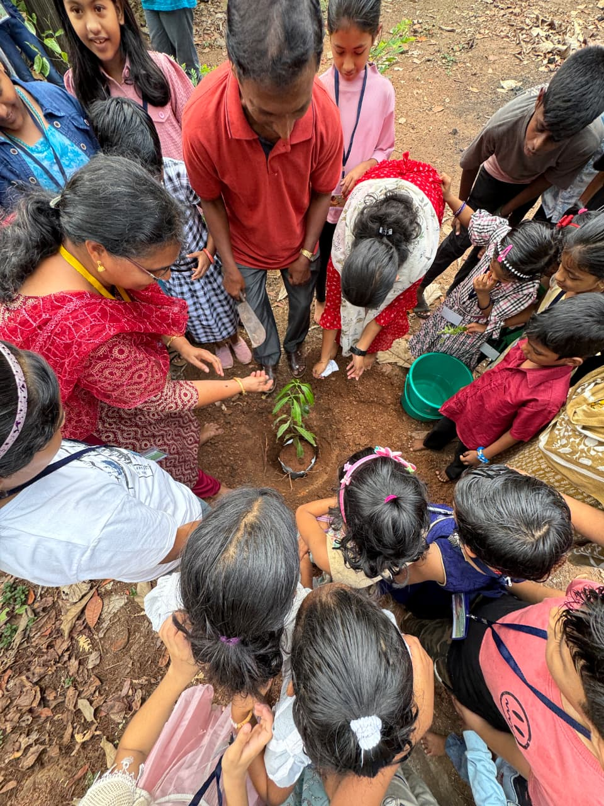
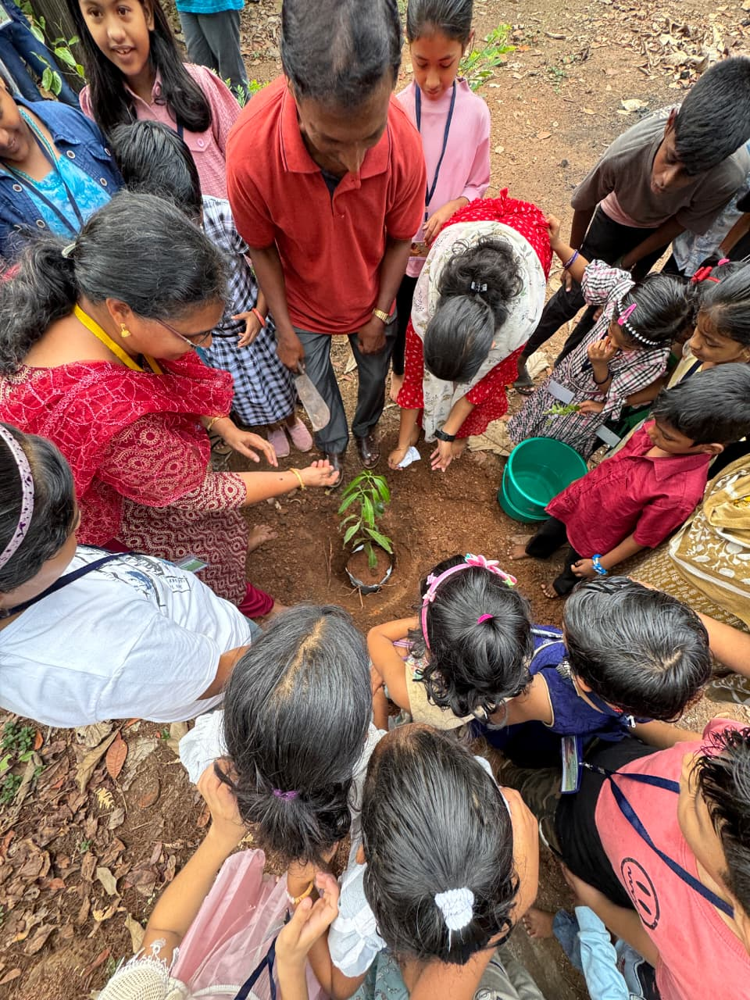

About Horeb Mar Thoma Church
Horeb Mar Thoma Church is a vibrant and blessed parish located in the heart of Palankara in Nilambur. Established
in the early 1950s, the church stands as a testimony to the unwavering vision and deep faith of our forefathers.
What began as a small fellowship of eight devoted families has, by the grace of God, grown into a thriving
spiritual community of over 100 families.
Today, Horeb Mar Thoma Church is not only a place of worship but also a cherished landmark that continues to
inspire faith, fellowship, and service in the region.
Our parish is part of the Mar Thoma Syrian Church, which traces its roots to the apostolic tradition of St.
Thomas, one of the twelve disciples of Jesus Christ. Horeb Mar Thoma Church functions under the Kunnamkulam
Malabar Diocese of the Mar Thoma Sabha, receiving spiritual guidance and leadership through its diocesan bishop
and the wider church community.
The parish continues to uphold its mission of being “lighted to lighten,” fostering spiritual growth and unity
among its members while actively contributing to the life and witness of the Church.
 
